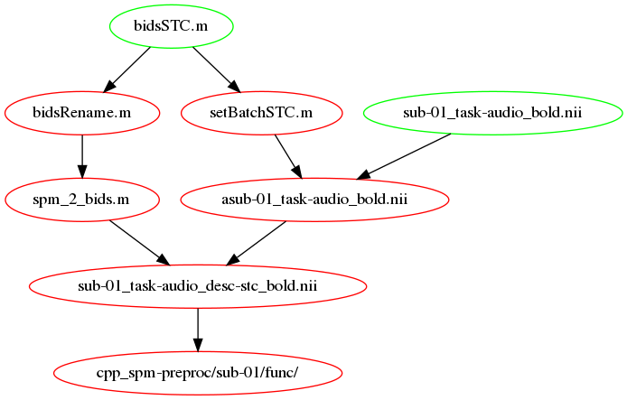
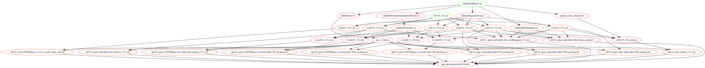
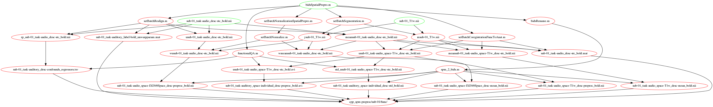
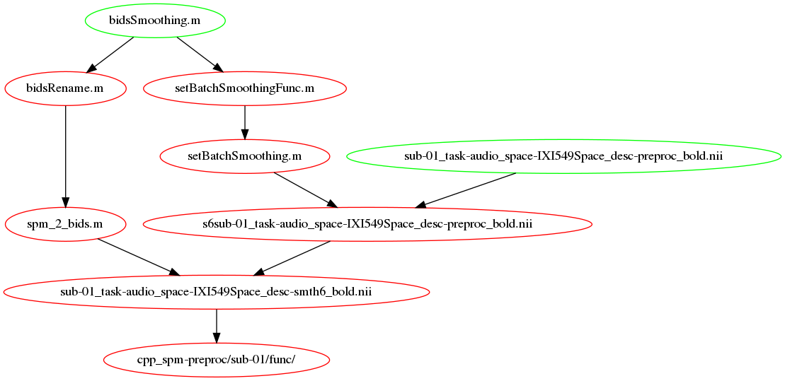
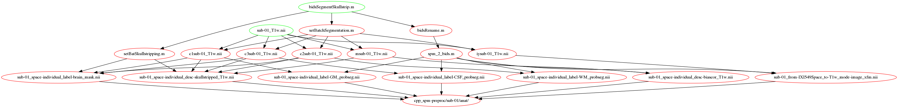

Preprocessing workflows#
Note
The illustrations in this section mix what the files created by each workflow
and the functions and are called by it.
In this sense they are not pure DAGs (directed acyclic graphs) as the *.m files
mentioned in them already exist.
Slice Time Correction#
More info available on this page of the SPM wikibook.

Slice timing correction workflow#
Some comments from here on STC, when it should be applied
At what point in the processing stream should you use it?
This is the great open question about slice timing, and it’s not super-answerable. Both SPM and AFNI recommend you do it before doing realignment/motion correction, but it’s not entirely clear why. The issue is this:
If you do slice timing correction before realignment, you might look down your non-realigned time course for a given voxel on the border of gray matter and CSF, say, and see one TR where the head moved and the voxel sampled from CSF instead of gray. This would results in an interpolation error for that voxel, as it would attempt to interpolate part of that big giant signal into the previous voxel. On the other hand, if you do realignment before slice timing correction, you might shift a voxel or a set of voxels onto a different slice, and then you’d apply the wrong amount of slice timing correction to them when you corrected - you’d be shifting the signal as if it had come from slice 20, say, when it actually came from slice 19, and shouldn’t be shifted as much.
There’s no way to avoid all the error (short of doing a four-dimensional realignment process combining spatial and temporal correction - Remi’s note: fMRIprep does it), but I believe the current thinking is that doing slice timing first minimizes your possible error. The set of voxels subject to such an interpolation error is small, and the interpolation into another TR will also be small and will only affect a few TRs in the time course. By contrast, if one realigns first, many voxels in a slice could be affected at once, and their whole time courses will be affected. I think that’s why it makes sense to do slice timing first. That said, here’s some articles from the SPM e-mail list that comment helpfully on this subject both ways, and there are even more if you do a search for “slice timing AND before” in the archives of the list.
Spatial Preprocessing#
Perform spatial preprocessing by running bidsSpatialPrepro()
The figures below show the bidsSpatialPrepro workflow as it would run using
realign and unwarp (default) and with normalization to SPM MNI space (IXI549Space).

Anatomical component of the spatial preprocessing workflow#

Functional component of the spatial preprocessing workflow#
Smoothing#
Perform smoothing of the functional data by running
bidsSmoothing()

Smoothing workflow#
Others#

Segment and skullstrip workflow#